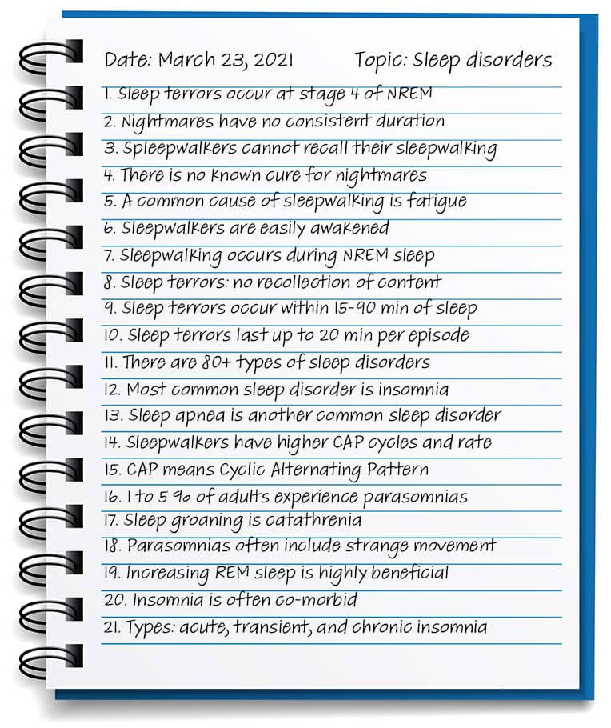

This method uses sentences separated by lines to quickly write as much information as possible. it requires quick handwriting or typing skils to be used effectively and it is the most common note-taking method because of its simplicity.
On the downside, this results in oversized that are very difficult to review afterwards. Although, sometimes it is the only viable choice when participating in a fast-paced lecture that you are not prepared for.